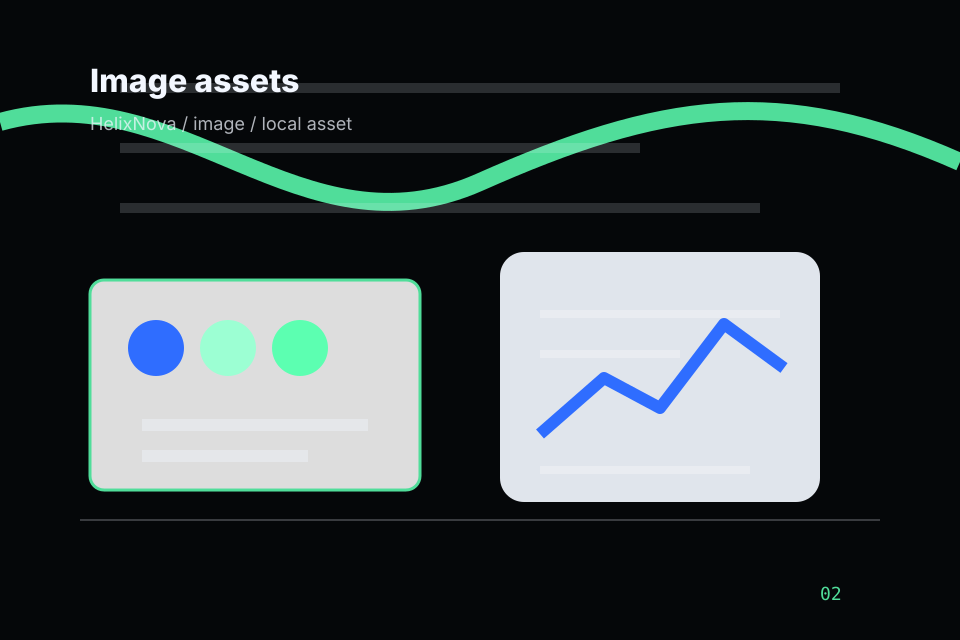
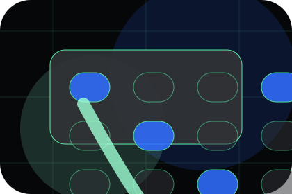
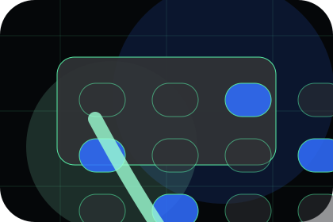
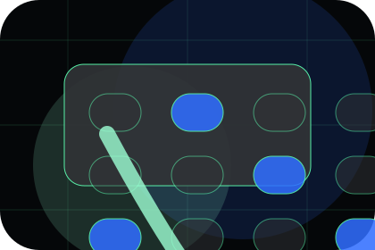
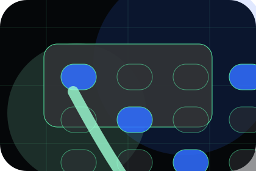
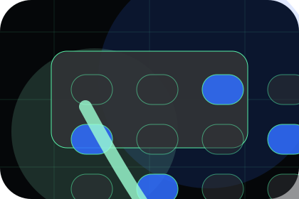
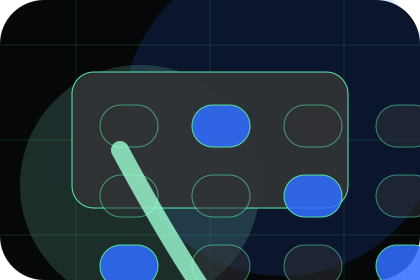
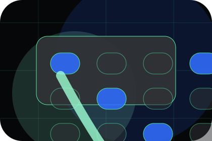
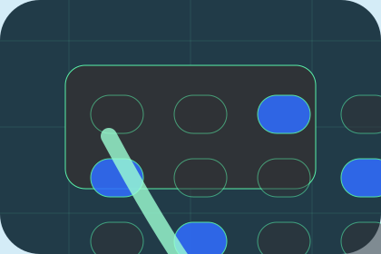

Context
Mission gives the page a specific angle instead of repeating the navigation label.
Life Sciences
Scientific operating system dossier for evidence and scientific credibility.

Home / 02
Mission adds technical context to the home route, using the scientific operating system dossier structure to support evidence and scientific credibility before visitors choose a next step.
Helix uses pipeline evidence cards and focused copy to make the decision easier to scan, aligning the section with evidence and scientific credibility rather than filling space.
Open CompanyMission gives the page a specific angle instead of repeating the navigation label.
The pipeline evidence cards show what to compare, what to avoid, and what matters most for life sciences, pharmaceuticals & biotechnology visitors.
The final cue points to a useful internal route so the section keeps the journey moving.
Home / 03
Disease adds technical context to the home route, using the scientific operating system dossier structure to support evidence and scientific credibility before visitors choose a next step.
Helix uses pipeline evidence cards and focused copy to make the decision easier to scan, aligning the section with evidence and scientific credibility rather than filling space.
Open ScienceDisease gives the page a specific angle instead of repeating the navigation label.
The pipeline evidence cards show what to compare, what to avoid, and what matters most for life sciences, pharmaceuticals & biotechnology visitors.
The final cue points to a useful internal route so the section keeps the journey moving.
Home / 04
Platform makes the contact path concrete: what to send, how the response works, and what Helix needs before visitors discuss the research fit.
The section reduces contact friction by naming the channel, expected detail, privacy path, and response expectation instead of dropping visitors into a generic form.
Open Pipeline
What information helps Helix respond with a useful answer instead of a generic reply.

How the visitor should think about response, urgency, location, or availability.

The expected next message keeps scope, timing, and the first practical step clear.
Home / 05
Pipeline adds technical context to the home route, using the scientific operating system dossier structure to support evidence and scientific credibility before visitors choose a next step.
Helix uses pipeline evidence cards and focused copy to make the decision easier to scan, aligning the section with evidence and scientific credibility rather than filling space.
Open TrialsPipeline gives the page a specific angle instead of repeating the navigation label.
The pipeline evidence cards show what to compare, what to avoid, and what matters most for life sciences, pharmaceuticals & biotechnology visitors.

The final cue points to a useful internal route so the section keeps the journey moving.
Home / 06
Evidence gives the proof layer for home: standards, evidence, and reassurance that make the next decision feel grounded.
Instead of relying on vague claims, Helix presents visible standards, process cues, and proof artifacts that help life sciences visitors judge fit.
Open PlatformVisible proof that helps visitors believe the claims behind evidence.
The quality, safety, or operating expectation this section makes explicit.
What becomes clearer before someone decides whether to discuss the research fit.
Home / 07
Partners gives the proof layer for home: standards, evidence, and reassurance that make the next decision feel grounded.
Instead of relying on vague claims, Helix presents visible standards, process cues, and proof artifacts that help life sciences visitors judge fit.
Open ResearchHelix structures partners around evidence, standard, and a clear next route so visitors can compare the block quickly before they discuss the research fit.
Discuss ResearchHome / 08
News gives researching visitors a practical route into guides, checklists, and comparison material without leaving the site structure.
Each resource behaves like a useful internal link, giving cold and warm visitors a way to learn, compare, and return to the action path.
Open Partners
A useful entry point for visitors who need more context before they discuss the research fit.

A scannable comparison aid that makes research usable before the next decision.

A route back to support, services, or contact when the visitor is ready to act.
A useful entry point for visitors who need more context before they discuss the research fit.
Open resourceA scannable comparison aid that makes research usable before the next decision.
Open resourceA route back to support, services, or contact when the visitor is ready to act.
Open resourceHome / 09
Trust gives the proof layer for home: standards, evidence, and reassurance that make the next decision feel grounded.
Instead of relying on vague claims, Helix presents visible standards, process cues, and proof artifacts that help life sciences visitors judge fit.
Open NewsVisible proof that helps visitors believe the claims behind trust.
Home / 10
Helix closes the home route with a clear action, a quick reminder of the value, and a low-friction way to discuss the research fit.
Visitors who are ready can use the primary action. Visitors who are still comparing can scan the section links, proof, and support routes before they discuss the research fit.
Discuss ResearchThe final block keeps the choice simple: act now, compare one more proof route, or send enough detail for a focused response.
Discuss Researchevidence and scientific credibility
A research platform story built around AI discovery, phase tables, partner proof, and data-scale credibility. Home ends with a direct path to discuss the research fit, plus enough context for visitors who still need to compare.

Discuss Research